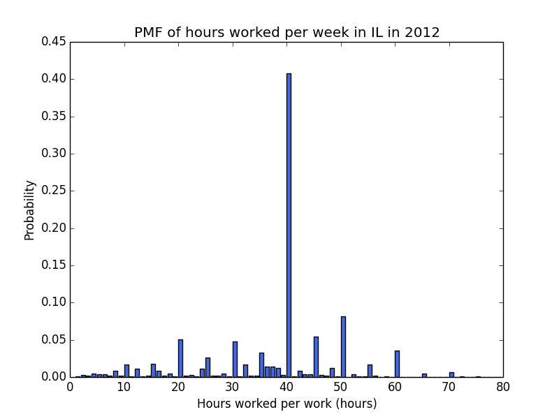
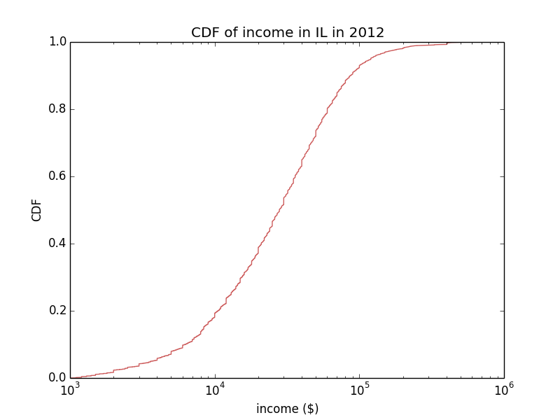
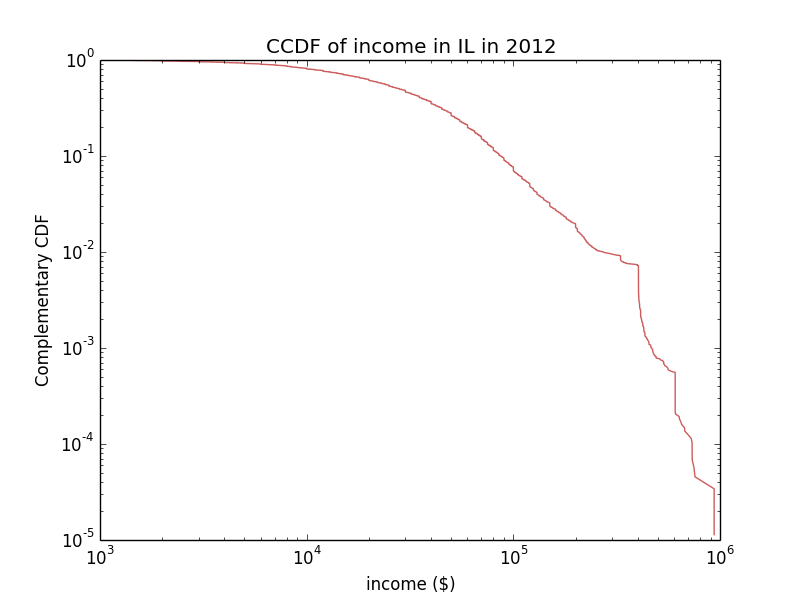
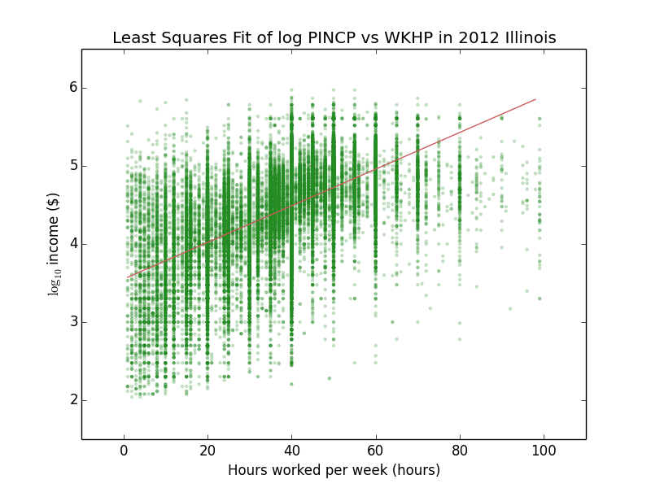

For an up-to-date version of this document, see week 7 assignment.
In this problem, you will compute the probability mass function (PMF), cumulative distribution function (CDF), and complementary cumulative distribution function (CCDF), and plot them. Here are some examples to show you where we are going. First, we plot the PMF of the WKHP (hours worked per week) column of ss12pil.csv.

Predictably, most people work 40 hours a week. Next, we plot the CDF of the PINCP (income) column,

and also plot the CCDF,

These two plots tell us a lot about the income distribution. First, note that the CDF of log(income) is that of a normal distribution (compare it with Figure 4.5 in Think Stats by Allen B. Downey). Thus, it suggests that the income distribution is a log-normal distribution. Second, the log-log plot of CCDF looks like a log-normal distribution for the most part, but it becomes a straight line in the very high-income region (The jaggedness is due to the small sample size in this region). If you have read Section 4.2 of Think Stats, you know that the CCDF of a Pareto distribution looks like a straight line on a log-log scale. So which one is it, log-normal or Pareto, or could it be both at the same time?
According to Wikipedia on log-normal distribution,
In economics, there is evidence that the income of 97%–99% of the population is distributed log-normally. (The distribution of higher-income individuals follows a Pareto distribution.)
It seems like we have (or are about to) reproduce just such evidence. Your task in this problem is to
As the name suggests, this function returns the dictionary form of a histogram. See Section 2.3 of Think Bayes for hints.
Note that PMF is a normalized histogram, and you may want to call get_histogram() function from inside get_pmf() function. See Section 2.3 of Think Bayes for hints.
Here is a very easy algorithm to implement this function. See the definition of empirical distribution function on Wikipedia. That means we can simply
According to Wikipedia, the resulting empirical CDF is an unbiased estimator for the true CDF.
Note: Do NOT use numpy.histogram() function to create a CDF. It uses binning, which might be useful in other cases but not in this case. The method I outlined above is a better characterization of the true CDF.
In the main() function, you have to use Matplotlib to create plots similar to the ones shown above. Note that we import get_columns() function from the stats2.py module that we wrote in week 3, so if you are not sure if your get_columns() function is written correctly, download both stats2.py and stats.py.
<firstname>-<lastname>-distributions.py and upload it to Moodle.The locomotive problem is found in Section 3.2 of Think Bayes by Allen B. Downey. We will rephrase the locomotive problem and apply it to our Illinois census data:
The households in 2012 Illinois census data are labeled using the serial numbers {1, 2, ..., N}. You see a household with the serial number 1493780. Estimate how many households there are in Illinois.
The number 1493780 is the serial number of the very last household listed in ss12pil.csv.
In this problem, we will completely rewrite Downey's code by eliminating the class structure and using Numpy, because
How substantial is the difference? Applying Downey's pure Python code to our problem, I got
$ time python train.py
Estimated number of households: 5285183
real 0m24.686s
user 0m18.316s
sys 0m0.928s
but using Numpy, I got
$ time ./households.py
Estimated number of households: 5285183
real 0m0.963s
user 0m0.568s
sys 0m0.392s
And that's for one serial number. When you run Bayesian updates for example, it quickly adds up.
Your task in this problem is to write the following five functions:
Note that if you use Numpy functions correctly, each function will not take more than one or two lines to write. I will give you hints on how to do this, but you don't have to follow my recommendations as long as your functions do what they are supposed to do, i.e. take the specified parameters and return the correct Numpy arrays. But remember that all functions must return Numpy arrays, so if you use for loops you code will be very inefficient.
The main function is already written and provided for you. You don't have to write anything here. Browse this first to understand the big picture.
Note that the number N will be used for building a uniform prior. So what is our prior belief regarding the number of households in IL before seeing the data? Not much except that we have some idea about the population of IL. A quick google search shows me that the population of IL in 2012 was 12.88 million. The number of households cannot be greater than the population, so I think it's reasonable to use hypotheses of [1, 2, ..., 12880000].
Hint: Use numpy.arange().
The prior is P(H) in Bayes' theorem. Here we use a uniform prior, i.e. all elements in the array have same values, 1 / N.
Hint: See numpy.oneslike(). Create an array of same length as hypotheses with all ones. (If the input array to *oneslike()* is an integer array, the output array will also be an integer array; you might want to specify dtype to make it a floating point array.) Divide all elements by the length of hypotheses.
The likelihood is P(D|H) in Bayes' theorem. Recall that hypotheses is a Numpy array of [1, 2, ..., N]. If the n-th element of hypotheses is smaller than data, the n-th element of likelihood is zero because the serial number cannot be greater than the number of households. On the other hand, if the n-th element of hypotheses is greater than or equal to data, the question becomes what is the chance of getting a particular serial number given that there are hypotheses[n] persons? Thus, if hypotheses[n] >= data, likelihood[n] is 1.0 / hypotheses[n], and 0 otherwise.
Hint: Say you have the following Numpy arrays:
>>> x = np.array([1.0, 2.0, 3.0])
>>> y = np.array([0.5, 2.5, 2.5])
You want to compare them element-wise and create a Boolean array of True if x >= y and False if x < y. An easy way to do this is
>>> (x > y)
array([ True, False, True], dtype=bool)
See also numpy.ndarray.astype(). That means we can convert our Boolean array to, say, an array of floats with
>>> (x > y).astype(np.float)
array([ 1., 0., 1.])
From Bayes' theorem, the posterior P(D) is equal to prior times likelihood (divided by the normalizing constant). Thus, the get_posterior() function should
Hint: A simple multiplication of two Numpy arrays performs the multiplication element-wise. For example,
>>> x = np.array([1.0, 2.0, 3.0])
>>> y = np.array([4.0, 5.0, 6.0])
>>> x * y
array([ 4., 10., 18.])
This element-wise multiplication is exactly what we want; we want to multiply the prior and the likelihood element-wise.
Hint: Don't forget to normalize. Since adding up all elements of the posterior array should give you 1.0, an easy way to normalize is to divide each element by the sum of all elements. See numpy.sum(). For example,
>>> x = np.array([1.0, 2.0, 3.0, 4.0])
>>> x / x.sum()
array([ 0.1, 0.2, 0.3, 0.4])
Hint: Again, you can use element-wise multiplication of hypotheses and posterior, and our estimate is the sum of all elements in the product array.
<firstname>-<lastname>-households.py and upload it to Moodle.Using the Illinois census data ss12pil.csv, pick any two columns that you think are correlated, and compute a least squares fit for the two columns. Make a scatter plot of the two columns you chose. In the same figure, plot the line of best fit using the slope and intercept from the least squares fit. Submit your code via Moodle as firstname-lastname-lsqfit.py.
Here's an example:

Section 9.6 of Think Stats describes how to compute a least squares fit, which I paraphrase:
Given two Numpy arrays x and y,
1. Compute the sample means, x.mean() and y.mean(), the variance of x, and the covariance of x and y.
2. The estimated slope is beta = Cov(x, y) / Var(x).
3. And the intercept is alpha = y.mean() - beta * x.mean().
You can find everything you need in Numpy statistics functions.
Your task is to use Numpy functions to
Numpy already has a function that does this, but you may not use this function (or any other pre-built functions that computes the least squares fit) for this problem. But you might want to compare your result with the Numpy least squares fit function to make sure that you got it right.
Tip: If you are going to use the numpy.var() function, you should specify an optional parameter ddof, i.e. use numpy.var(ddof = 1). See Numpy manual and Section 8.2 of Think Stats for discussion on biased and unbiased estimators.
In the main() function,
Here are some tips:
I used columns WKHP and PINCP, but you do not have to use the same columns I did. Or you can choose to reproduce the above plot. Your choice.
The file ss12pil.csv is one of the American Community Survey (ACS) Public Use Microdata Sample (PUMS) files. You can read more about ACS PUMS here. This link is a pdf file of the data dictionary, which shows what each column (e.g. SERIALNO, AGEP, WKHP, etc.) means.
For creating scatter plots using Matplotlib, refer to week 4 lessons and Section 9.4 of Think Stats.
<firstname>-<lastname>-lsqfit.py and upload it to Moodle.